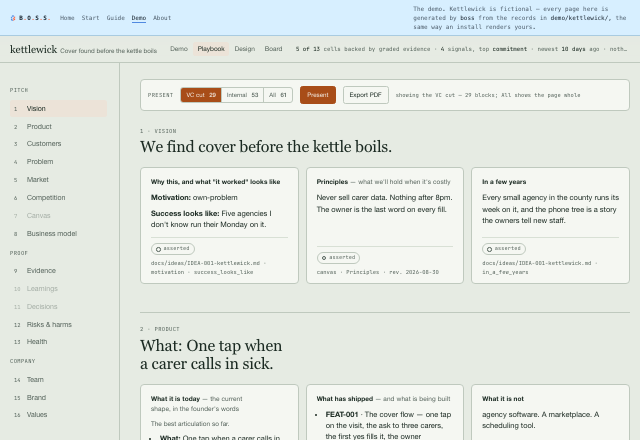

One page for the pitch, the proof and the company
Three things a founder keeps rewriting by hand: the deck for someone outside, the one-pager for someone busy, and the page the team is supposed to be aligned on. They drift from each other and from the work. The playbook is all three from one source — the records BOSS already made you write as you went — so they cannot disagree with each other, or with the build.

boss playbook renders it. Open it.Present, in one of three cuts
Present turns the page into slides. The cut decides which blocks are in: the VC cut, the Internal one, or Everything — each a list of block ids computed at render from the records, so a new decision is a new slide without anyone editing a deck. Remove any slide from the current cut and restore it; that memory lives in your browser, never in the records. BOSS's cut is the first draft; your delete is the last word. Export this cut writes the PDF through the print sheet.
Every block carries Copy and Slide: paste one box into a doc, or open one box as a slide by itself. The copy sheet gathers the page as plain text for the tools that want text. A view, never an app — there is nothing here to keep up to date.
A chapter with nothing behind it says so
A hole renders as a hole: the chapter is there, and it holds the question it is waiting on and the verb that answers it. It is never padded, because a page that looks complete over records that aren't is the most convincing wrong thing you can hand to someone. The evidence ladder sits in the chrome — how much of this is stated pain, how much observed, how much committed — so a reader can see what the page is standing on before they read a word of it.
The holes fill at your pace, through three doors, none of them a wizard. /import
takes a pasted paragraph as readily as a file, folds it into the idea, then says what else it
could fill — a count for People, two rivals, a tagline, a person — and writes each record only
on a yes. /close notices what you said this session that a record could hold.
And every chapter names the verb that fills it.
Two pages, one chrome
boss design renders the design space
the same way, from the same records and the same page shell — the tokens, the people, the
components, the patterns — under .boss/ next to the playbook. The board
(boss board) is the third view, read from each record's own status line. Three
pages, generated; the records are the only thing you write.